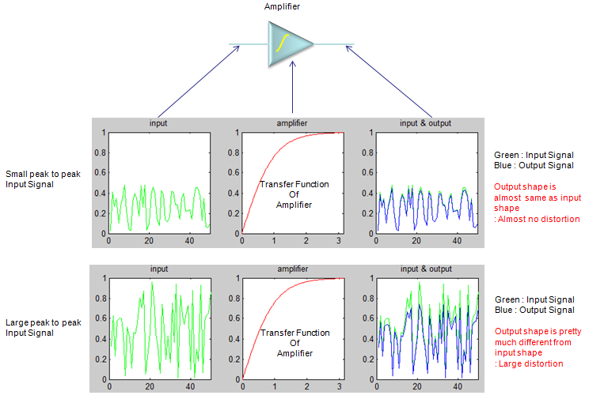

|
Predistortion Home : www.sharetechnote.com |
|
Predistortion is a technique which can compensate the influence of distortion created by an amplifier. As you know, Amplifier is a device that maginfies the input signal and output a larger signal. Ideal amplifier should amplifies the signal in the same degree whether the input signal level is low or high. However, in reality most of amplifier amplifies a little different degree depending on the input level. This different level of amplification depending on signal level would result in the distortion of the signal and this distortion would cause various unwanted outcomes. One of the biggest problem is that the distortion would cause large degree of power leakage out of the signal bandwidth. Would there be any way to minimize the effect of distortion ? One possible idea is that to distort the signal in the exactly opposite way that the amplifier will distort before the signal goes into the amplifier. This technique is called 'Predistortion' meaning 'Distortion Before Amplifier'.
Let's assume that you have an amplifier and the transfer function (operating function) of the amplifier looks like the plot at the center of the following illustration. With just a glimpse, you would notice the transfer function is not linear, meaning the degree of amplification varies depending on the level of the input signal.
Now let's look at the figure at upper track. A signal (green plot) with relatively low level goes into the amplifier (top-left). After going through the amplifier, you would have the output signal shown in blue color. If you compare the input signal and output signal, you would notice the shape of the signal is almost same. It means that the input signal is not distorted by the amplification. (I intentionally used the transfer function with gain of 1 for easy comparison of the two signal). Now look at the graph in lower track. You see a little wide range of signal (green plot) goes into the amplifier. In this case, you will see some difference between the shape of input signal (green color) and output signal (blue color) especially upper range of the signal. It means that the signal get distorted by the amplifier.

If you want to play with this process a little bit further, try with the following Matlab/Octave code. You can play with inputmin and inputmax value as you like to change the input signal level and see how the output signal changes. gain = 1.0; x = 0:pi/100.0:pi; y_amp = gain * tanh(x);
inputmin = 0.0; inputmax = 1.0; inputsize = 50; input = inputmin + (inputmax-inputmin) * rand(1,inputsize); output = gain * tanh(input);
subplot(1,3,1);plot(input,'g-');title('input');xlim([0 length(input)]);ylim([0 1]); subplot(1,3,2);plot(x,y_amp,'r-');title('amplifier');xlim([0 max(x)]);ylim([0 1]); subplot(1,3,3);plot(input,'g-');hold on;plot(output,'b-');hold off; title('input & output');xlim([0 length(input)]);ylim([0 1]);
Now the question is "Is there any way to minimize or remove the distortion effect ?".
One idea is to add another block right in front of the amplifier as shown below. Let's assume that the transfer function of the predistortion block is as shown below. Let's see how the signal changes after it went through the distortion block. You would notice pretty big difference between the output signal (blue color) and input signal (green color) meaning that it is 'distorted'. But this distortion is 'wanted/intended' distortion. And then this distorted signal (not the original signal) goes through the amplifier. Now see how the signal coming out of the amplifier looks like. You will see that the shape of the output signal is almost same as the input signal. This shows that the intentional distortion created by the predistortion block has removed the effect of distortion by the amplifier.
If you want to play with this process a little bit further, try with the following Matlab/Octave code. You can play with inputmin and inputmax value as you like to change the input signal level and see how the output signal changes. gain = 1.0; x = 0:pi/100.0:pi; y_amp = gain * tanh(x); x_pre = 0:1/100.0:0.99; y_pre = gain * atanh(x_pre);
inputmin = 0.0; inputmax = 1.0; inputsize = 50; input = inputmin + (inputmax-inputmin) * rand(1,inputsize); predistortedInput = atanh(input); output = gain * tanh(predistortedInput);
subplot(1,5,1);plot(input,'g-');title('input');xlim([0 length(input)]);ylim([0 2]); subplot(1,5,2);plot(x_pre,y_pre,'r-');title('predistortion');xlim([0 max(x_pre)]);ylim([0 2]); subplot(1,5,3);plot(input,'g-');hold on;plot(predistortedInput,'b-');hold off; title('predistorted Input');xlim([0 length(input)]);ylim([0 2]); subplot(1,5,4);plot(x,y_amp,'r-');title('amplifier');xlim([0 max(x)]);ylim([0 2]); subplot(1,5,5);plot(input,'g-');hold on;plot(output,'b-');hold off; title('input & output');xlim([0 length(input)]);ylim([0 2]);
What I explained above is mostly based with time domain characteristics, but in reality handling amplifiers you would characterize them more in frequency domain. If you compare the frequency response of unlinearized (without predistortion) and linearized (with predistortion), it can be illustrated as below. As you see, the most critical issue caused by operating in nonlinear region without predistortion is high ACLR/ACPR as shown in gray traces as shown below. With proper predistortion, you can remove those high ACLR/ACPR to make it like black trace shown below.
Image from the article Linear Power Amplifiers for 3G (W-CDMA) Base Stations
Now the most important question would be "How can I know the degree of predistortion for a specific amplifier ?". More technically speaking, how can I figure out the transfer function of predistortion block ?
Theoretical answer is very simple. If you know the transfer function of the amplifier, you can get the transfer function of the predistortion block just by taking the inverse function of the transfer function. As you know, in reality nothing goes as easy as you say. For further details of predistortion (especially implementation of predistortion), please refer to other materials. you can google out a lot of articles/posts. I think this is enough for explaining the concept of the predistortion.
Basically there are two method of define the degree of predistortion, open-loop method and closed-loop method. (This is also a kind of control system, so it would be either open-loop or closed-loop).
In open-loop method as shown below, we use a kind of predefined lookup table to specify the degree of predistortion. This method would be simple to implement but the question is what would be the best lookup table and how can we create the table.
In closed loop method as illustrated below, the output of the amplifier feedback to the predistortion block and the block adaptively figure out the proper predistortion parameter based on the feedback. The advantage would be that this method would dynamically adjust the value but implementation of adaptive algorithm would be difficult.
|